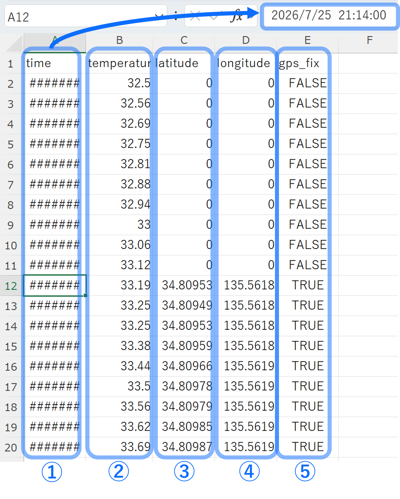
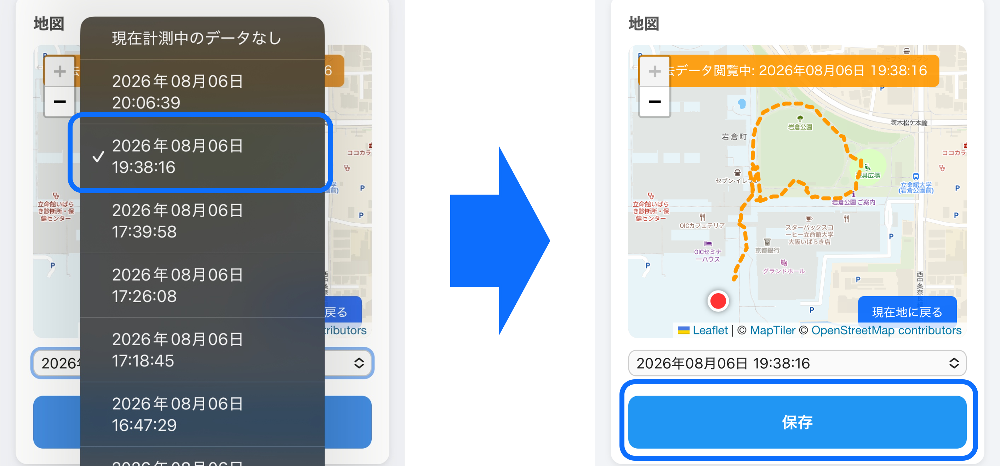

CSVデータ概要
本システムでは、計測開始から停止までのデータをCSV形式で保存します。
データは1秒ごとに記録され、水温・GPS位置情報・計測時刻を保存します。以下の画像はCSVファイルをExcelで開いたものです。
5GBを超えると自動で古いファイルから削除が行われます。こまめなダウウンロードを推奨します。

保存される項目
| 項目 | 内容 | 単位 |
|---|---|---|
| ①time | 計測時刻-Excelでは####のように表示されていますが情報は保存されています。 | 年/月/日 時:分:秒 |
| ②temperature | 水温 | ℃ |
| ③latitude-GPSが受信できていない場合０と表記されます。 | 緯度 | degree |
| ④longitude-GPSが受信できていない場合０と表記されます。 | 経度 | degree |
| ⑤fix | GPS受信状態-GPS受信の有無を示します。 | True(受信成功) / False(受信失敗) |
記録例
CSVファイルには以下のような形式で保存されます。
time,temperature,latitude,longitude,fix
12:00:01,24.5,34.8090,135.5622,True
12:00:02,24.5,34.8091,135.5624,True
12:00:03,24.6,34.8092,135.5626,True
GPSデータについて
GPS信号が一時的に取得できない場合があります。
その場合、本システムでは直前に取得した位置情報を使用して記録を継続します。
そのため、CSV内の緯度・経度は常に最新取得値または直前取得値となります。
データ利用例
保存されたCSVデータは以下の用途に利用できます。
- 水温変化の解析
- 移動経路の確認
- 測定場所ごとの比較
- グラフ作成やデータ解析
CSVファイル取得方法
Web画面から計測ファイルを選択し、 保存ボタンを押すことでCSVファイルを取得できます。
